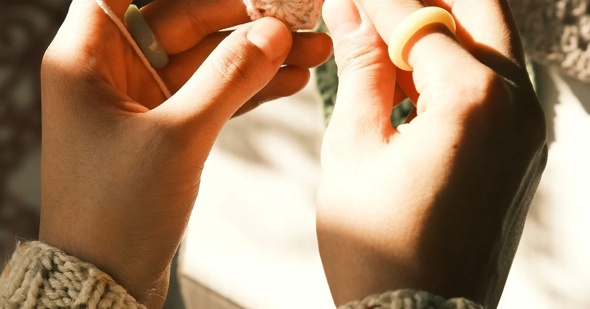
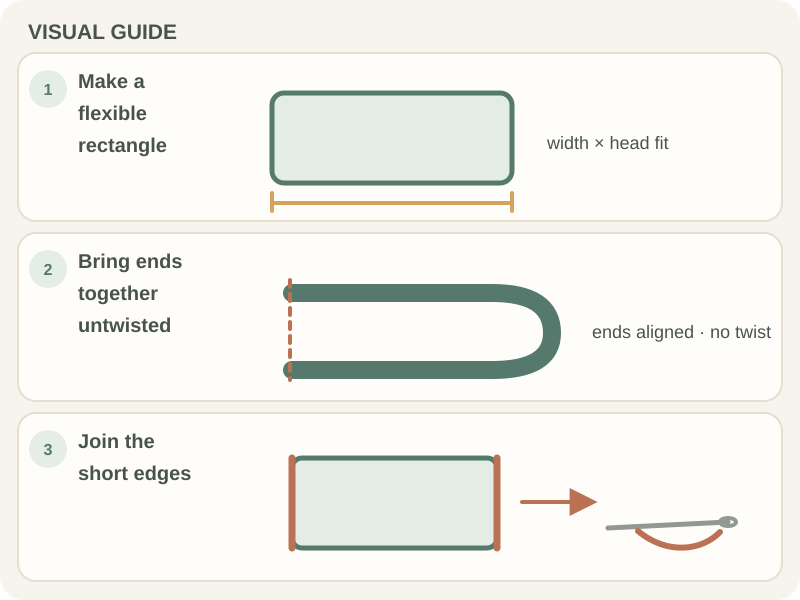

Beginner Projects · Beginner guide
How to Make a Simple Crochet Headband
Make a simple crochet headband by checking fit and joining the ends without assuming a universal size.

Headband fit depends on the wearer, stitch, yarn stretch, and desired snugness. A measured swatch is more reliable than a one-size row count.
Before you begin
Use the intended yarn and hook, a measuring tape, and a yarn needle. A swatch shows stretch and how the yarn feels against skin.
Step-by-step instructions
- Measure around the head where the band will sit and decide how much ease the fabric can tolerate.
- Swatch the planned stitch; measure relaxed and gently stretched to estimate band length.
- For a simple US single-crochet band, chain enough for the chosen width, sc in the second chain and across, then chain 1 and turn. Continue even rows until it reaches the measured length minus any ease supported by your swatch. Check fit before fastening off.
- Join the short ends with a seam suited to the fabric, weave in tails, and try it on before securing the finish.

What to check
Fit it before finishing
The diagram shows one seam option, not a required construction. The band should stay in place without uncomfortable pressure; yarn stretch can change with wear and washing.
Frequently asked questions
How many chains should I start with?
The count depends on yarn, hook, stitch, and desired width. Swatch and measure rather than relying on a universal number.
Will the band stretch?
Many fabrics have some give, but the amount and recovery depend on stitch and fiber. Check the sample.